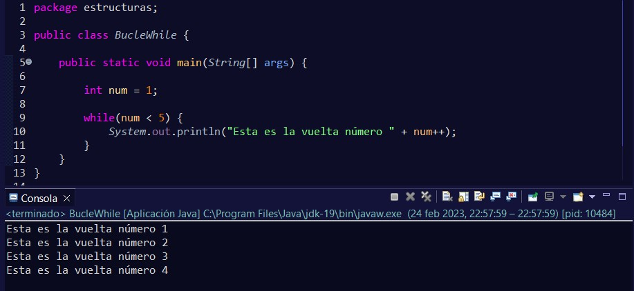
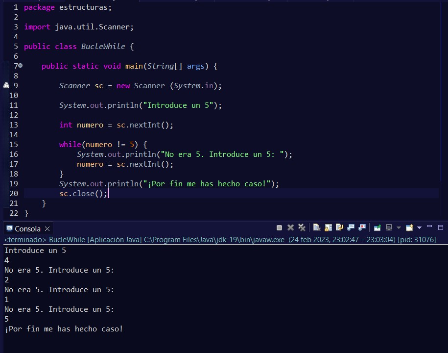
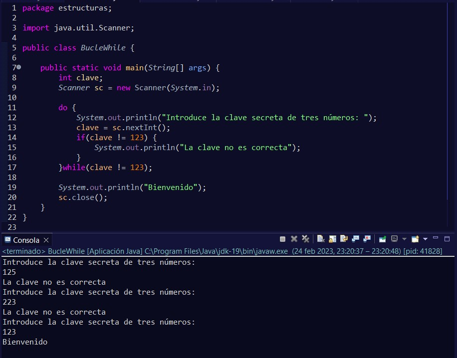

Las estructuras de repetición, como bien dice su nombre, son para repetir código.
La estructura while, repite sus instrucciones de una manera indeterminada. Es decir, no se sabe si serán cinco vueltas, ocho vueltas o ninguna. Sólo se sabe que se ejecutarán mientras se cumpla una condición.
En este caso se puede deducir cuántas vueltas va a dar, ya que, tenemos la variable inicializada a 1, y en cada vuelta del bucle, nuestro while se va incrementando en una unidad. Por lo tanto, sabemos con seguridad que de darán 4 vueltas al no incluirse el 5.
Pero realmente, donde se ve su uso es cuando desconocemos cuándo se va a producir el valor que está evaluando. Un caso podría ser cuando el usuario debe de introducir un dato concreto y mientras se cumpla la condición a evaluar, se estará ejecutando.
Aquí estamos viendo una variante de la clase Scanner, en este caso, para que se escaneen números en vez de Strings, se utiliza el método nextInt(), que nos permitirá escanear los números que introduzca el usuario.
Por la salida de consola, podemos ver cómo se ha ido introduciendo números diferentes a 5, y hasta que el usuario no lo ha introducido, éste se ha estado ejecutando.
